진료 안내의 범위
외래 진료와 치료 관련 정보를 제공합니다. 개인별 진료 내용은 상담을 거쳐 확인합니다.
병원 이용과 진료에 필요한 정보를 안내합니다.
진료 과정과 이용 시설, 상담 문의 방법을 확인해 주세요.
외래 진료와 치료 관련 정보를 제공합니다. 개인별 진료 내용은 상담을 거쳐 확인합니다.
진단 시기와 현재 치료 일정, 복용 중인 약을 진료진에게 알려 주세요.
식사량과 체중, 수면처럼 일상에서 달라진 점을 진료 때 이야기할 수 있습니다.
환자 동의가 있는 경우 보호자 동반 상담이 가능한지 예약 때 문의해 주세요.
다른 의료기관의 검사 결과나 처방 내역이 있으면 방문 때 가져와 주세요.
건강 정보는 진료와 상담에 필요한 범위에서 확인합니다.
방문 목적과 현재 가장 불편한 점을 먼저 말씀해 주시면 상담 내용을 정하는 데 참고할 수 있습니다.
진료 설명을 가족과 함께 듣고 싶다면 예약 과정에서 동행 가능 여부를 확인해 주세요.
환자 건강 정보에 관한 질문은 본인 동의와 병원 안내 절차를 확인한 뒤 문의해 주세요.
다른 의료기관에서 진행 중인 검사나 치료가 있다면 날짜와 담당 기관을 상담 때 알려 주세요.
통증이 생긴 부위와 시작 시점, 달라지는 상황을 정리해 의료진에게 설명해 주세요.
새롭게 나타난 증상과 기존 증상의 변화를 구분해 진료 때 말씀해 주세요.
수면이나 식사처럼 생활 중 달라진 점은 언제부터였는지 함께 기록해 주세요.
처방약 외에 복용하는 영양제나 건강기능식품도 제품명과 복용량을 알려 주세요.
최근 검사 결과와 처방 내용이 있다면 의료진이 확인할 수 있도록 준비해 주세요.
통증이나 다른 불편을 줄이는 진료가 필요한 경우 상담에서 가능한 지원을 물어보세요.
가족이 환자를 돌보며 겪는 어려움도 진료 상담에서 질문할 수 있습니다.
설명이 어려웠던 부분은 해당 내용을 짚어 의료진에게 다시 확인해 주세요.
진료 중 확인하려는 내용을 메모해 두면 상담 때 빠뜨리지 않고 물어볼 수 있습니다.
검사 결과의 의미와 다음에 필요한 확인 사항을 담당 의료진에게 질문해 주세요.
치료 계획이 바뀌면 변경된 내용과 다음 확인 시점을 함께 안내받아 주세요.
식사나 활동에 관한 주의가 필요한지 현재 진료 상황에 맞춰 확인해 주세요.
진료 뒤 안내받은 주의 사항과 다음 예약 일정을 개인 기록에 남겨 주세요.
상담이나 검사 예약 날짜, 접수 장소를 방문 전에 병원에 확인해 주세요.
검사 결과와 처방 자료를 날짜별로 정리하면 다음 상담 때 참고할 수 있습니다.
환자와 상의한 뒤 가족이 확인할 질문을 정리해 상담에 가져와 주세요.
전화 상담 전 확인할 페이지나 예약 날짜를 준비하면 문의 내용을 전달하기 쉽습니다.
예약이 어려워진 경우 가능한 한 일찍 병원에 연락해 변경 방법을 문의해 주세요.
일반 안내와 개인 진료 판단은 다를 수 있으므로 해당되는 내용은 의료진에게 확인해 주세요.
상담 중 받은 자료를 다시 확인해야 하면 담당 부서에 제공 방법을 문의해 주세요.
설명을 들은 뒤 이해되지 않은 부분이나 추가 질문을 다시 확인해 주세요.
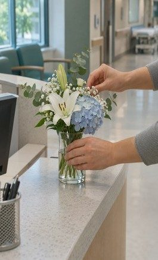
필요한 정보를 이해하기 쉬운 말로 안내합니다.
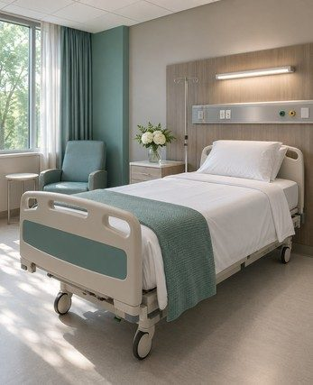
검사와 치료는 개인의 상태에 따라 검토합니다.
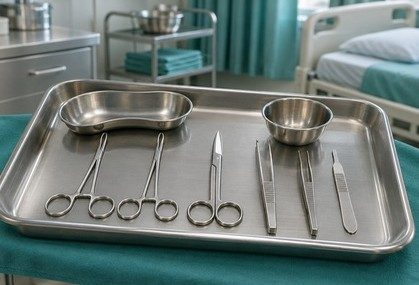
진료와 일상 관리에 관한 정보를 함께 살핍니다.
이 페이지는 일반적인 정보 제공을 위한 것입니다. 진단과 치료에 관한 결정은 의료진과 상담해 주세요.
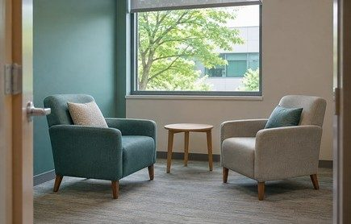
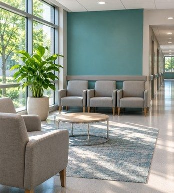
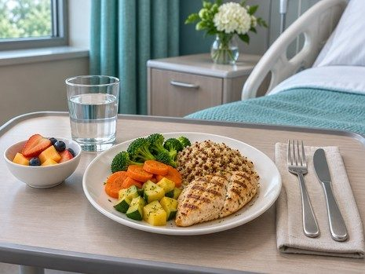
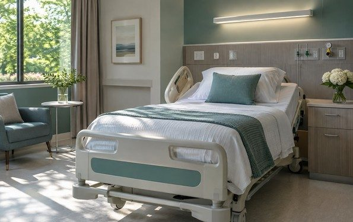
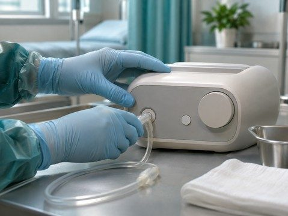
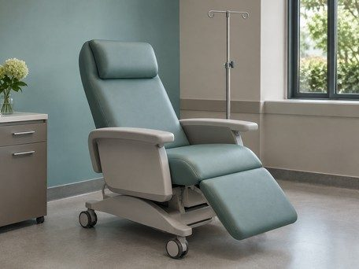
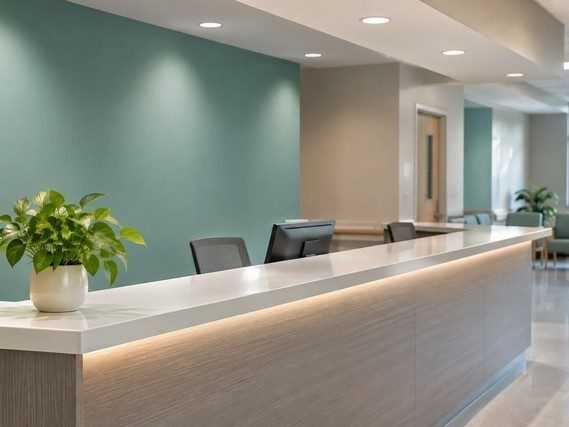
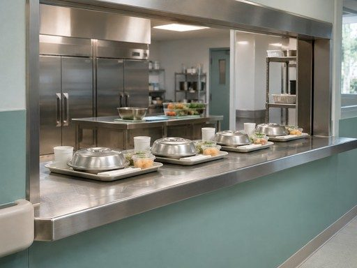
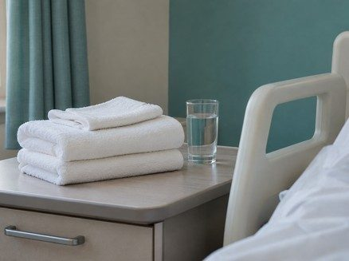
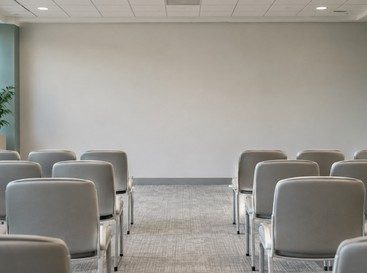
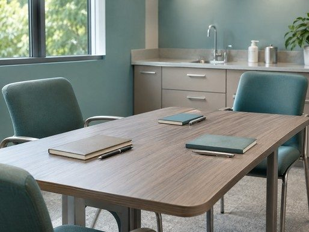
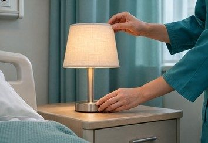
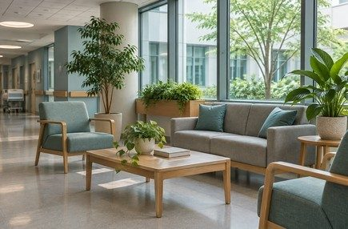
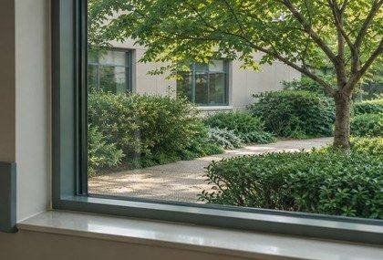
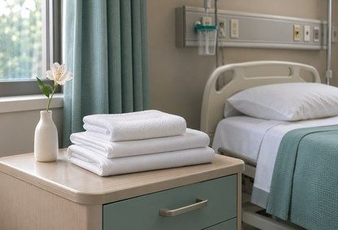